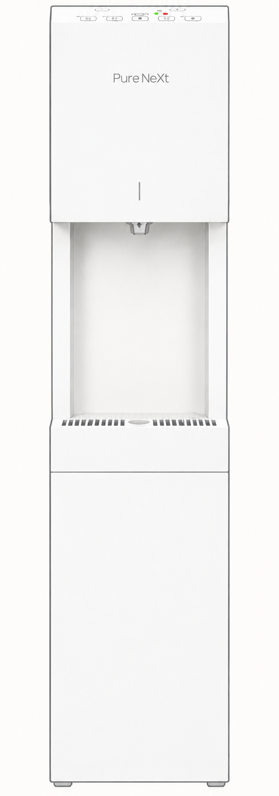

10ml単位の自動出水
100ml〜1,000mlを10ml刻みで指定。ボタンを押し続けずに、自動で出て自動で止まります。
本体を中心に、機能と暮らしを支えるサービスをまとめました。
100ml〜1,000mlを10ml刻みで指定。ボタンを押し続けずに、自動で出て自動で止まります。

冷水・温水・常温水・白湯（55〜60℃）・40℃に対応。40℃モードは温水と冷水を順に出し、指定量に仕上げます。
ボタンごとに前回の量を記憶。いつもの量をすぐに選べます。冷水と常温水のメモリは共通です。

浮遊・付着段階で殺菌。バイオフィルムを形成する前に殺菌し、水が出てくる直前まで清潔にこだわります。

水はねしにくい出水口と外せる受け皿。2Lボトルや鍋も置けます。チャイルドロック・エコモードも搭載。
ホワイトはクラウドダンサー。ブラックは光沢をおさえたマット仕上げです。
税込3,630円。契約条件と設置スペースは製品ガイドの「製品仕様」をご覧ください。
ご契約者は日用品・食料品・美容品などを安い価格で購入できます。
自然故障は無料修理。任意の安心保証オプション（月額税抜550円）で、お客様側の原因による故障も無料修理になります。

必要水分量の算出、飲水記録、トラブル時の確認、フィルターの注文・交換時期の確認ができます。